Project 01
Agents on AWS
MCP servers that connect language models to real company data, safely, on Bedrock and AgentCore, with Lambda, Step Functions and ECS doing the plumbing that keeps them running.
Ask me about it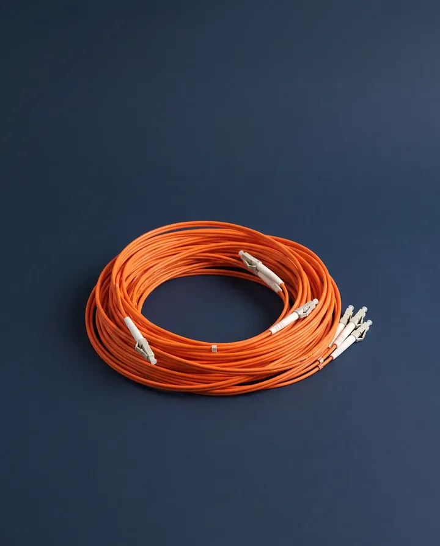
hi, my name is
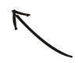
Building agents at Alakai
I build AI agents and ship them on AWS
about me!
I'm an AI engineer who has worked every layer of the stack: the screen people touch, the data behind it, the model in the middle and the cloud it runs on. These days I build agents and MCP servers on AWS at Alakai.
and I don't ship code I can't explain.
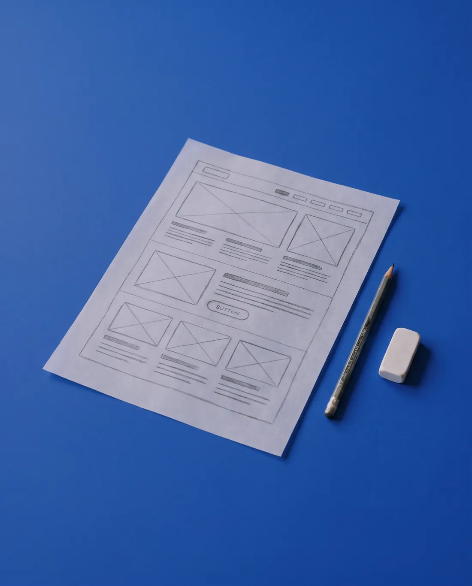
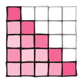
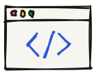
the long way round
Five layers, learned one at a time, from the screen down to the cloud.
before all this: a B.Tech in mechanical engineering. I still take things apart to see how they work.
01 · 2022 – 2023
At NxtWave's CCBP 4.0 I learned to build the web by hand: HTML, CSS, JavaScript and React. I still design the screens my agents and dashboards live in.
JavaScript EssentialsReact
02 · 2023 – 2024
SQL first, then Power BI, DAX and data modelling. As a data analyst intern at AtliQ I worked through 100K+ records, lifted reporting efficiency 30% and cut manual prep 25%.
PL-300 certifiedSQL 5★ on HackerRank
03 · 2024 – 2025
An M.S. in Applied Computer Science at Grand Valley, and research on explainable AI for farms: soil-moisture forecasts at R² 0.99, with Grad-CAM++, SHAP and LIME to show why.
Deep Learning SpecializationXAI
04 · 2025
I wanted to know how a transformer really thinks, so I built a decoder-only one from scratch in PyTorch, every tensor by hand, and then wrote the explainer I wished I'd had.
PyTorchRead it on Medium
05 · 2025 – now
Now I build agents and the MCP servers that connect them to real data, on Bedrock, AgentCore, Lambda and ECS, with CI/CD, monitoring and security around them.
Claude & MCPLangGraphBedrock
explore my work!
Things I built to understand them, and things I built to ship.
Project 01
MCP servers that connect language models to real company data, safely, on Bedrock and AgentCore, with Lambda, Step Functions and ECS doing the plumbing that keeps them running.
Ask me about it
Project 02
Embeddings, causal self-attention and the training loop, written by hand to see how a language model really works. Before it, make_more: a WaveNet-style character model.
See the code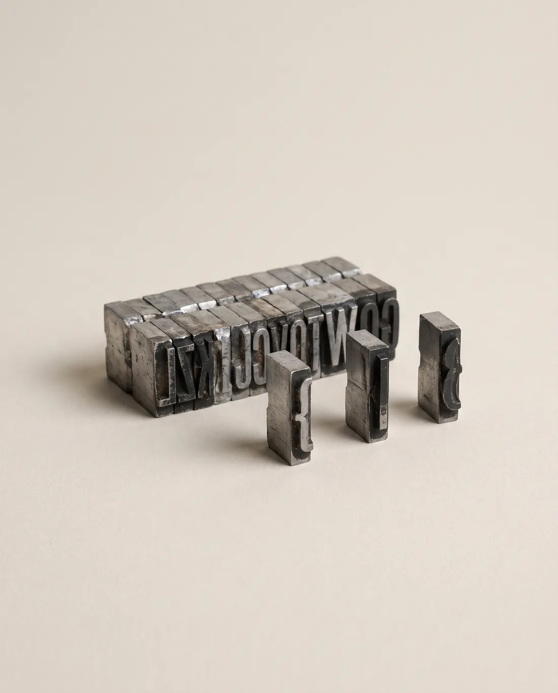
Project 03
Forecasting soil moisture at R² 0.99 so farms water only what they need, then opening up the models with Grad-CAM++, SHAP and LIME so people can see why.
See the code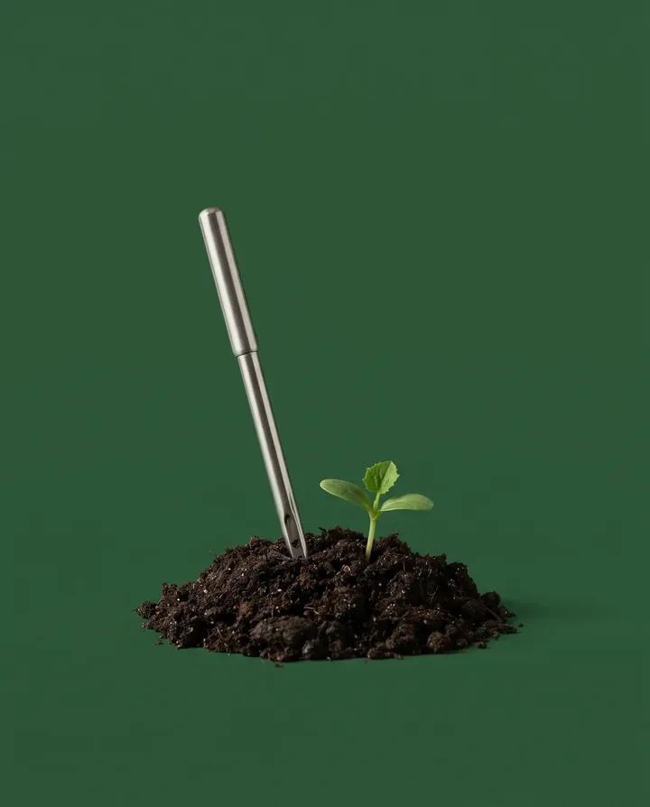
Project 04
One Power BI board for sales, finance, marketing and supply chain: pick a year and a region and every figure answers at once.
See the board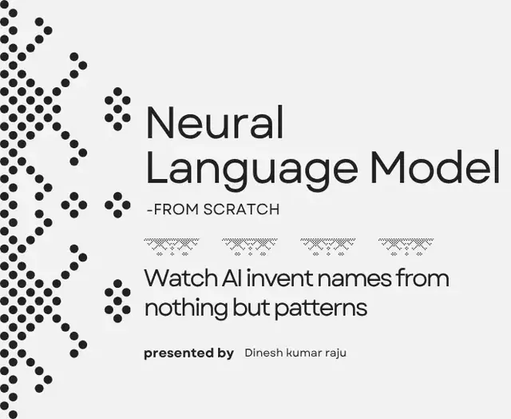
make_moreCharacter-level language model · PyTorch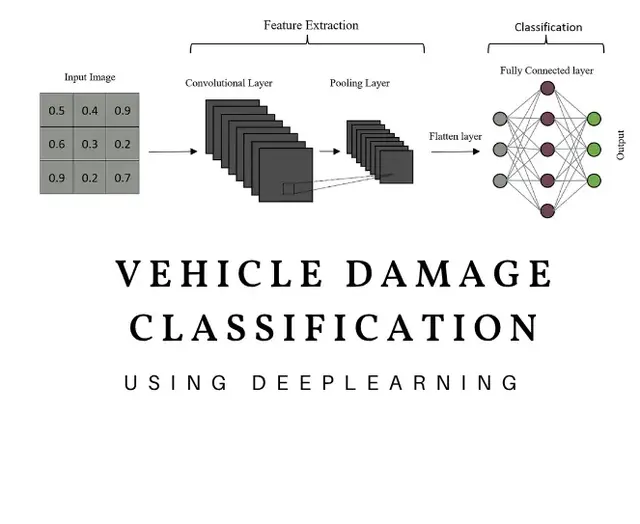
Vehicle damage detectionResNet50, transfer learning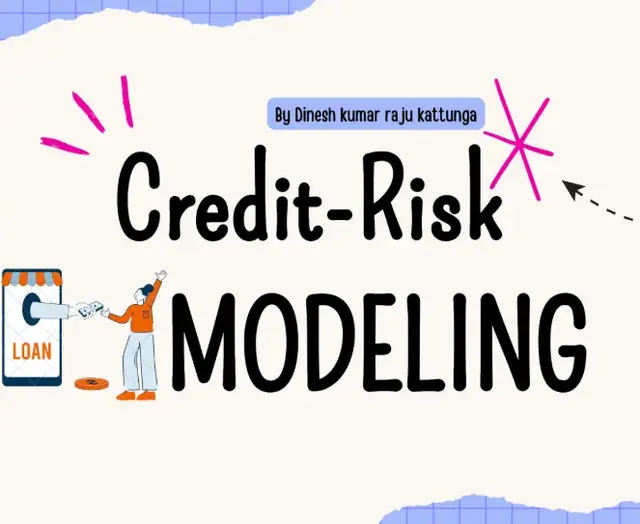
Credit-risk modelXGBoost + Optuna · AUC 0.98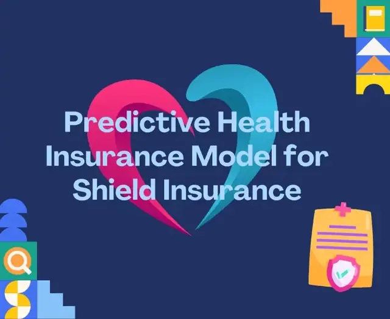
Insurance premiumsscikit-learn · 97% accuracytry it!
Three things to poke at: an agent running on AWS, a sales dashboard, and a credit-risk model you can tune.
0.0 s elapsed 0 tool calls 0 tokens $0.000 cost
what's happening
Type a question or pick one, then press Run. Tap any box in the diagram to see what that AWS service does.
A replay with sample data: no model is called from this page. Your question is matched by keywords to one of the scripted runs.
Sample data for a fictional hardware maker, in the shape of my Business 360 Power BI board. Every number below answers to the filters, and a click on a market filters the rest.
so what?
2,000 sample loan applicants, generated and scored in your browser by a model shaped like my credit-risk project (XGBoost + Optuna, AUC 0.98). Every threshold is a trade-off: move it and watch.
where I've worked
Feb 2026 – now
MCP servers that connect language models to real data, and the AWS architecture under them, with CI/CD, monitoring and security across every environment.
Jan – Dec 2025
Explainable AI for precision agriculture: soil-moisture forecasting, and CNN decisions opened up with Grad-CAM++, SHAP and LIME.
Sep – Dec 2024
100K+ records mined with SQL and Python, Power BI dashboards that lifted reporting efficiency 30%, and automation that cut manual prep 25%.
Jan 2024 – Dec 2025
Alongside the degree.
PL-300Microsoft Power BI Data Analyst · 2025
AWS AI Practitionerstudying
AWS Solutions ArchitectAssociate · studying
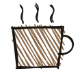
off the clock: I write about machine learning on Medium, study for the next AWS exam, and take things apart to see how they work.Hiring for AI or cloud, building something with agents, or just curious? Write to me. I read every message.